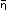
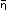

'
() is therefore:
'
() is therefore:
[
 , N
()]'()
(= [, , N()]).
, N
()]'()
(= [, , N()]).
This is the most general form of transition from one proposition to another.
0'x Def. and
'v'x = v+1'x Def.
According, then, to these symbolic rules we write the series
x,
'x,
''x,
'''x . . . . . as:
0'x,
0+1'x,
0+1+1'x,
0+1+1+1'x . . . . .
Therefore I write in place of
"[x,  , ' ]",
, ' ]",
0,
v'x,
v+1'x]",
And I define:
0 + 1 = 1 Def.
0 + 1 + 1 = 2 Def.
0 + 1 + 1 + 1 = 3 Def.
and so on.
, +1].